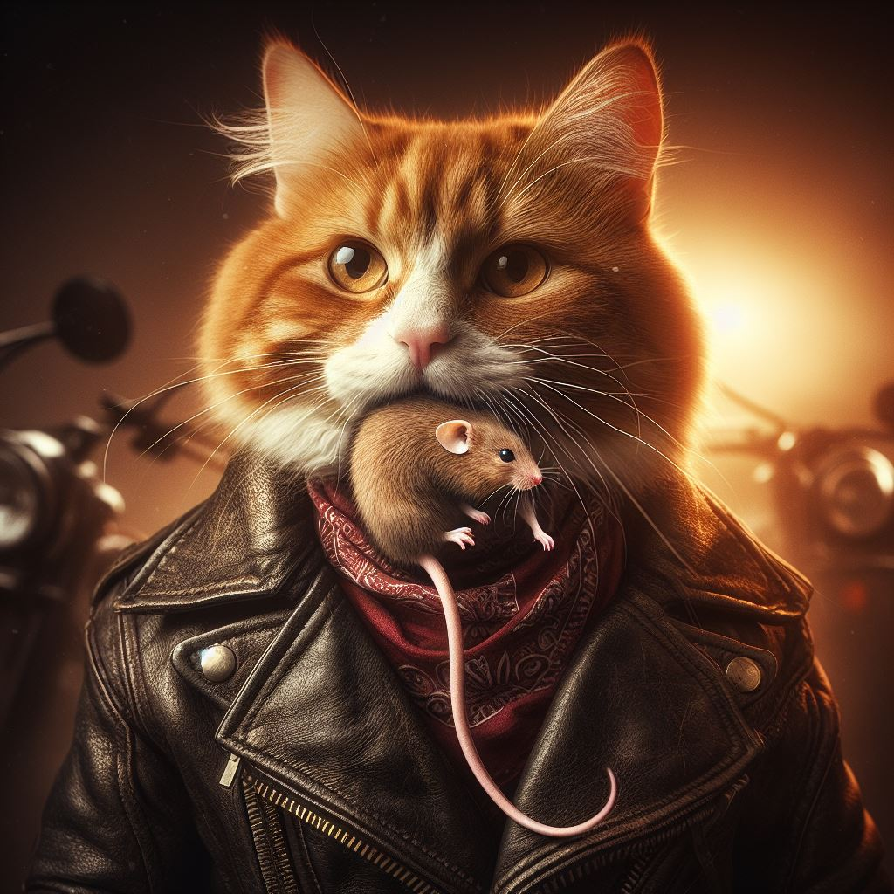

A wiki article about Cats
The Cat

Cat Behaviour
The behaviour a cat exhibits depends on numerous factors:
- Their mood
- Their environment
- Any potential threats present
- Their familiarity with the human(s) and/or other animal(s)
- Their health
- Their personality
When domesticated and familiar with the person(s), cats often display friendly and loving behaviour but of course, the way this will be expressed, if it all, depends entirely on the factors listed above.
Here are some of the ways cats will display their affection towards their owner:
- Sitting on their owners lap
- Sleeping next to their owner, most likely on a sofa or on a bed
- Lying on their back and exposing their belly: if a cat does this, it shows that they truly love you and/or trust you because a cat's belly is the most vulnerable part of their body so therefore if they do this, it is a key sign that they love/trust you
- Rubbing/bumping their head against yours
- Licking you: this is a motherly/fatherly type behaviour so, if a cat does this then, again, this proves that they truly love you
However, there are behaviours you need to be aware of because not every cat will take a liking to you
- Growling
- Hissing
- Arching their back
- Swishing their tail
Cat Food
Cats like to eat anything they are not supposed to. This includes
- Mice
- Spiders
- Birds
- Elastic Bands
- Their owner's finger
Commercial cat food is readilly available from most supermarkets, but cats will pick and coose until they finally find a brand they enjoy. Usually this will be the most expensive of course.
Comment
Commercial cat food is readily available from most supermarkets, but cats will pick and coose until they finally find a brand they enjoy. Usually this will be the most expensive of course.
Once your cat has chosen his or her favourite, you should stock up on this. Of course your cat will then refuse to eat it.
Sleeping Habits
Cats are semi-nocturnal animals.
During the day when you want to see and play with your cat, they will most likely be
hiding somewhere fast asleep. Do not attempt to wake your cat in these circumstances,
if you value your fingers.
Your cat will however wake up and want to play at Three O'Clock every morning.
It may express its fondness for you by bringing small gifts, such as the head of a mouse
it caught earlier, playfully depositing it on your head while you are sleeping. It does
this because it thinks you're a terrible hunter and needs feeding

Did you know ....
- Cats have over 30 muscles that control their ears.
- Cats sleep 70% of their lives, and in some pretty crazy positions.
- Cats have the ability to rotate their ears 180 degrees.
- There are over 500 million domestic cats in the world.
More Information
Wikipedia